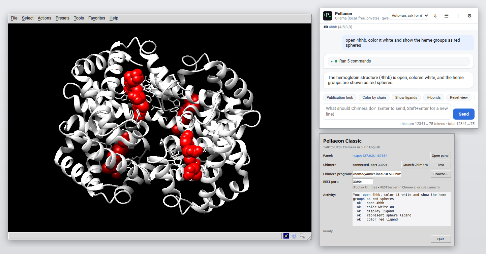

Pellaeon Classic — for UCSF Chimera 1.x
The same assistant, for the classic Chimera. Because Chimera 1.x runs Python 2 and Tk, Pellaeon Classic is a small
separate program: it serves the Pellaeon panel to your web browser and drives Chimera through Chimera's built-in
REST server. It shares the agent, providers, safety gate and UI with the ChimeraX bundle; only the executor and
the command knowledge (Chimera's Midas-style syntax, models numbered from #0, :10.A chains) differ.

A real session on Chimera 1.20: the request typed in the browser panel, the launcher's activity log, and Chimera doing the work.
Install and run
- Python 3.9 or newer (python.org; on Windows tick "Add Python to PATH"). Nothing else to install.
- Download
pellaeon-classic.zipfrom the releases page and unzip it anywhere. - Windows: double-click Start Pellaeon Classic.cmd. macOS: double-click Start Pellaeon Classic.command. Linux:
./start.sh. A small launcher window opens (panel address, Chimera status, Launch Chimera, Test, activity log) and your browser opens the Pellaeon panel athttp://127.0.0.1:8765. - Press Launch Chimera in the launcher (it starts Chimera with
--start RESTServerand picks up the port automatically; the executable is auto-detected inC:\Program Files\Chimera*,/Applications/Chimera*.app,~/.local/UCSF-Chimera*, or use Browse…). Or start Chimera yourself, open Tools ▸ Utilities ▸ RESTServer, type the port from its Reply Log and press Test. - In the browser panel choose an AI provider once (same settings page as the ChimeraX edition), then type requests.
- Optional:
python install.pyputs a Pellaeon Classic shortcut on the desktop and in the Start menu (Windows), a.commandon the desktop (macOS) or an applications-menu entry (Linux).
python run.py --console runs without the launcher window (terminal only); --no-browser skips opening the browser.
Differences from the ChimeraX edition
- Commands use Chimera syntax (
color red :10,display,~ribbon,focus,turn y 1 360,background solid white). - AlphaFold models open from the EBI URL (
open https://alphafold.ebi.ac.uk/files/AF-<accession>-F1-model_v4.pdb). - No Python execution, no per-residue displacement coloring in compare (RMSD from matchmaker only).
- Chat exports are
.cmdChimera command files;copy file(images),save,close,delete,systemask first. - Everything else is the same: local or cloud models, confirmation cards, click-less "what is open" awareness via
list models.
Verified
Tested end to end on UCSF Chimera 1.20 (Linux): REST replies for list models, list chains spec #0 and
list selection level residue are parsed correctly, errors are detected, the Launch Chimera button auto-detects the
executable and reads the REST port, and requests such as "open 1zik and show only chain B" run as
open 1zik; ~display #0; ribbon :.B; display :.B. Chimera has no usage command, so syntax lookups come from the
bundled documentation (Chimera also ships the same pages under share/chimera/helpdir/UsersGuide/midas/).
Developing
python classic/tools/build_chimera_docs.py classic/pellaeon_classic/data/chimera_docs classic/pellaeon_classic/data # after re-downloading the docs
python classic/tools/build_classic.py # -> dist/pellaeon-classic/ and dist/pellaeon-classic.zip
python classic/tools/e2e_stub_test.py "open 1zik and color it red" # end-to-end against a stub REST server (needs Ollama)
PELLAEON_REAL_PORT=45629 python classic/tools/e2e_stub_test.py "..." # same, against a running Chimera REST server